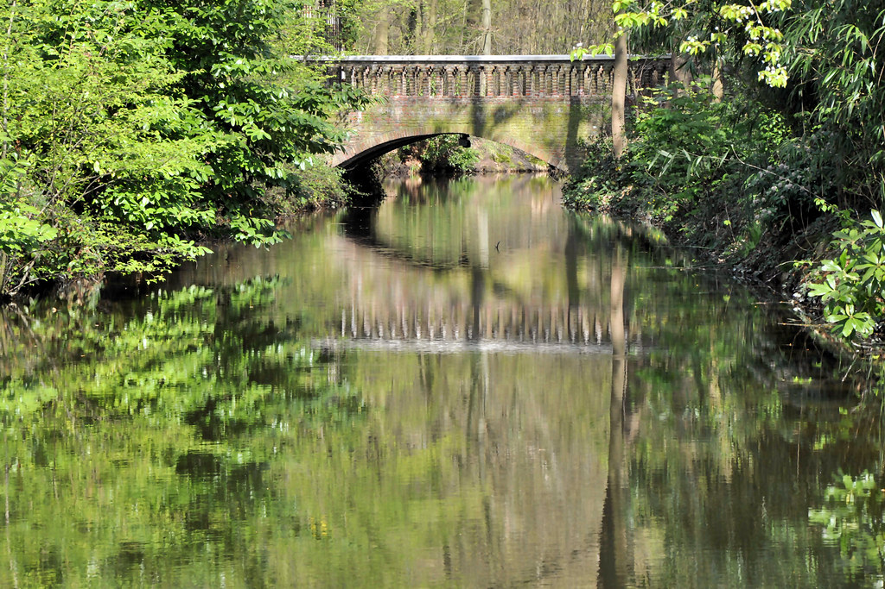

Kasteel Befferhof ligt in Bonheiden, ten oosten van Mechelen, aan het einde van de Befferdreef. Het kasteel staat op een omgracht domein en wordt omringd door een groen park met oude bomen, graslanden en waterpartijen. Vanuit de omgeving heb je op verschillende plaatsen zicht op het kasteel tussen het groen.
De naam Befferhof verwijst naar het historische Hof van Befferen, een belangrijk leenhof en rechtsplek voor verschillende omliggende dorpen in het oude land van Mechelen. Op de plaats van het huidige kasteel stonden al vroeger gebouwen met een bestuurlijke en residentiële functie. Het oorspronkelijke landhuis brandde af tijdens de Franse Revolutie en werd in 1832 herbouwd.
In 1929 kreeg het kasteel zijn huidige uiterlijk in neo-Vlaamserenaissance-stijl, met trapgevels, baksteenarchitectuur, decoratieve ankers en een karakteristieke tourelle. Het kasteel is volledig door grachten omgeven, wat het een uitgesproken kasteelkarakter geeft. Het park rond Befferhof sluit aan op het open landschap en de natuurgebieden in de Dijlevallei, waaronder het nabijgelegen Mechels Broek.
Vandaag is Kasteel Befferhof een privé-eigendom en niet toegankelijk voor rondleidingen of individuele bezoeken. Toch blijft het een herkenningspunt in Bonheiden en een interessante halte voor wie al wandelend of fietsend de omgeving van Mechelen en de provincie Antwerpen verkent.
Verblijf rond Mechelen & Bonheiden
Hoewel je niet in Kasteel Befferhof zelf kan overnachten, is de omgeving ideaal voor een rustig verblijf tussen stad en natuur. Je zit vlak bij Mechelen, de Dijlevallei en verschillende natuurgebieden in Bonheiden.
Verblijf in het historische Mechelen, op korte rijafstand van Befferhof. Combineer een bezoek aan de stad met uitstappen naar Bonheiden, natuurgebieden en kastelen in de buurt.
Bekijk verblijven in MechelenKies voor een B&B of vakantiewoning in Bonheiden of omliggende dorpen. Ideaal als je vooral wandelt of fietst in de Dijlevallei en de bossen rond Mechelen.
Bekijk accommodaties in de buurtGa voor een verblijf midden in de natuur, tussen de wetlands van het Mechels Broek en de omliggende bossen. Van daaruit bereik je zowel Kasteel Befferhof als andere uitstappen gemakkelijk.
Verblijven in de natuurDeze pagina kan affiliate links bevatten. Als je via onze partners boekt, ontvangen wij een kleine commissie, zonder extra kost voor jou. Zo help je ons deze gids gratis te houden.
Praktische info
Kasteel Befferhof is een privé-eigendom en kan niet van binnen bezocht worden. Het domein is niet vrij toegankelijk. Je kan het kasteel enkel vanop afstand zien, bijvoorbeeld vanaf de Befferdreef of tijdens wandel- en fietsroutes in de omgeving. Respecteer steeds de privacy van de bewoners.
Met de auto: Bonheiden ligt tussen Mechelen en Heist-op-den-Berg. Vanuit Mechelen volg je de richting Bonheiden en rijd je verder naar de Befferdreef. Parkeer steeds volgens de lokale voorschriften.
Met het openbaar vervoer: Neem de trein tot Mechelen en stap daar over op buslijnen richting Bonheiden. Stap uit in de buurt van de Befferdreef en vervolg te voet.
Als je enkel een glimp van het kasteel wil opvangen, volstaat een korte stop van 30 minuten. Wie Kasteel Befferhof combineert met een wandeling in Bonheiden of een uitstap naar Mechelen, is al snel een halve dag of langer op pad.
Blijf op de openbare weg en volg de bewegwijzerde paden; betreed het kasteeldomein niet. Combineer je bezoek met een wandeling in het Mechels Broek of langs de Dijlevallei. Plan een stop in Mechelen voor een bezoek aan de binnenstad, musea of horeca.
Activiteiten in de buurt
De regio rond Bonheiden en Mechelen biedt een mooie mix van natuur, erfgoed en stad. Kasteel Befferhof kan je makkelijk combineren met wandelingen, fietstochten en culturele uitstappen in de buurt.
Op een steenworp van Bonheiden ligt het Mechels Broek, een moerassig natuurgebied met vogelkijkhutten en wandelpaden. Ideaal om natuur en stilte op te zoeken.
Wandelingen & infoBezoek Kasteel Zellaer in Bonheiden, een neogotisch kasteel in een openbaar park. Het vormt samen met Befferhof en andere sites een interessante kastelentrip in de regio.
Meer over Kasteel ZellaerIn Mechelen wandel je langs de Dijle, bezoek je de Sint-Romboutskathedraal en geniet je van de vele cafés en restaurants. Een ideale combinatie met een rustige wandeling in Bonheiden.
Activiteiten & ticketsOp korte afstand ligt Zoo Planckendael, een populaire dierentuin met dieren uit de hele wereld en veel speelruimte voor kinderen. Een perfecte gezinsuitstap in combinatie met een verblijf in de regio.
Tickets & openingsurenAdres: Befferdreef 15, 2820 Bonheiden, België
Het kasteel ligt aan het einde van de Befferdreef, in een omgracht domein tussen Bonheiden en Mechelen. De groene omgeving sluit aan op de natuur in de Dijlevallei en het Mechels Broek.